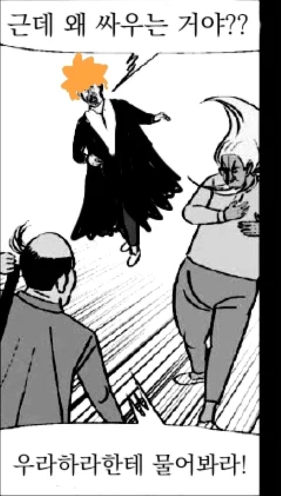
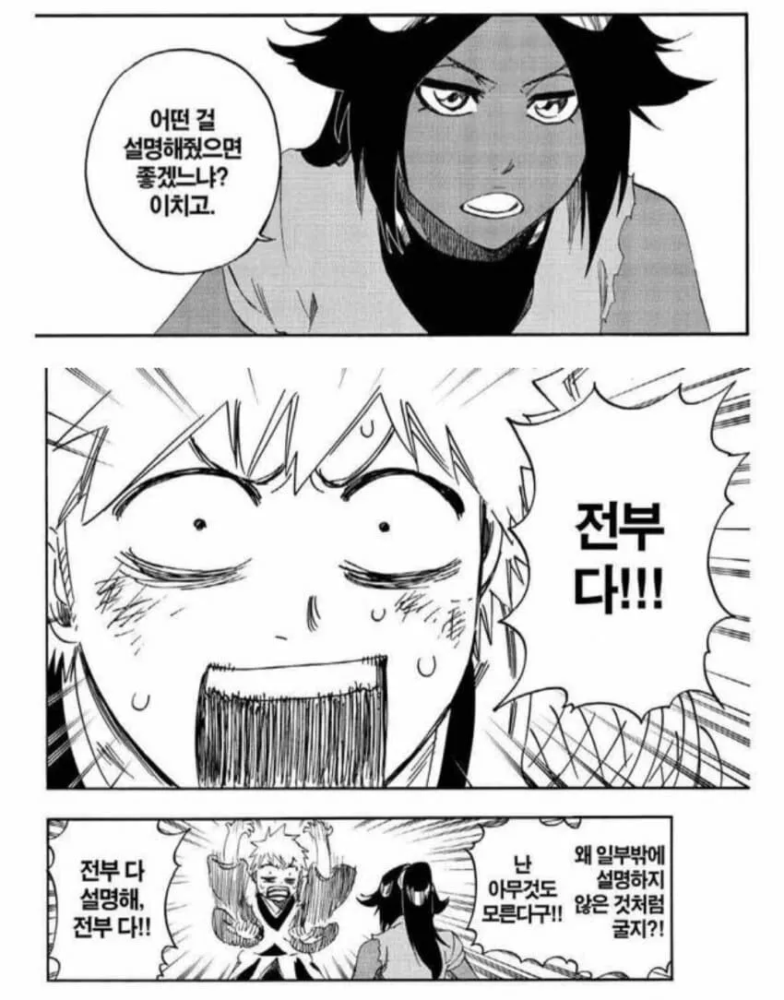

이치고 이새낀 진짜
순수 병기 취급받음
이치고 입장에서는
시발 이새끼들은 왜 지랄인데
나도 몰라 그냥 싸워
계속 이전개임


이치고 이새낀 진짜
순수 병기 취급받음
이치고 입장에서는
시발 이새끼들은 왜 지랄인데
나도 몰라 그냥 싸워
계속 이전개임
근데 어떤 미친놈이 방에 들어와서 신발 신은채로 이치고 침대에 올라가긴 했음
그렇게 유하바하가 죽게 됨
유하바하도 말하던
"왜 싸우는 지도 모르는데 싸우러 오냐"
그저 투입되서 월아천충 날리는 청년